Bún bò Huế
-
Thành phần
- Chân giò heo 1 Kg
- Nạm bò 500 Gram
- Bún sợi to 200 gram
- Dầu màu điều 3 muỗng
- Ớt 1-2 trái
- Chanh 1/2 quả
- Mắm ruốt 2 muỗng canh
- Gia vị quen thuộc
Hướng dẫn thực hiện
Chân giò heo nếu thích nhiều thịt thì chọn chân sau, thích da và gân sần sật thì chọn chân trước, chặt thành những khoanh tròn, rửa sạch. Luộc chân giò qua nước sôi cho hết chất bẩn sau đó rửa lại bằng nước sạch. Nạm bò rửa sạch, luộc riêng cùng 1/2 củ gừng thái lát cho thơm. Ninh lửa nhỏ khoảng 2 tiếng, dùng đũa xiên thử miếng nạm, nếu xiên qua được là đạt yêu cầu. Đợi thịt nạm nguội thái miếng mỏng.
- 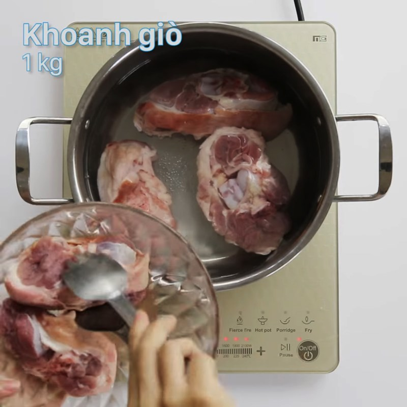

- 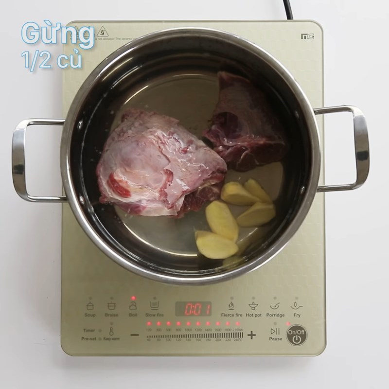
- 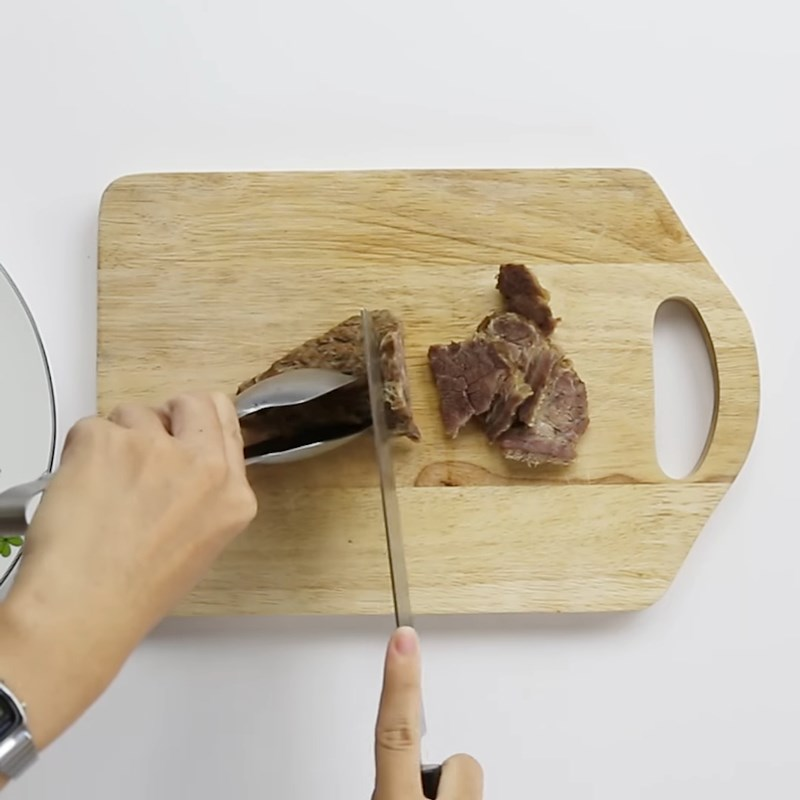
Huyết bò hoặc heo có thể mua sẵn hoặc mua huyết về luộc chín, thái miếng vừa ăn. (Lưu ý mua huyết ở những địa chỉ uy tín để đảm bảo an toàn thực phẩm). Nếu không ăn huyết có thể bỏ qua. Chả cua nặn thành từng viên tròn nhỏ thả vào nồi nước luộc nạm, chả nổi lên là đã chín, bạn vớt ra để riêng. Có thể thay thế chả cua bằng chả bò, chả giò hoặc không cho chả cũng được.
- 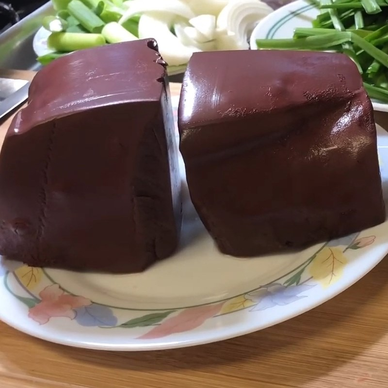
- 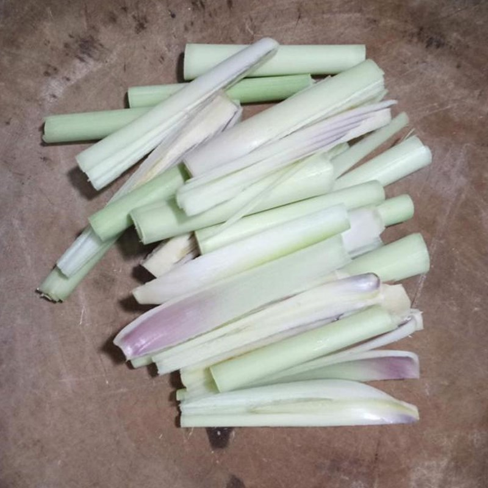


Hòa 2 muỗng canh mắm ruốc với 100 ml nước lạnh. Phi 4 cây sả băm cho thơm cùng 2 thìa dầu ăn, lấy bớt sả ra, cho 3 muỗng canh dầu màu điều vào. Băm nhuyễn 1 củ hành, 1 củ tỏi kèm 2 trái ớt rồi cho vào chảo phi vàng thì tắt bếp. Chân giò heo đã sơ chế bạn cho lên bếp ninh lửa nhỏ cùng 1 củ hành tây cắt đôi và 3 cây sả đập dập cho nước dùng thơm ngọt, ra hết chất trong xương. (Lưu ý thỉnh thoảng hớt bọt nồi nước dùng để nước được trong). Lấy phần trên của nước mắm ruốc cho vào nồi, bỏ phần cặn đi. Cho 2 muỗng canh đường, 2 muỗng canh hạt nêm, 1 muỗng canh muối vào, nêm nếm cho vừa miệng.

- 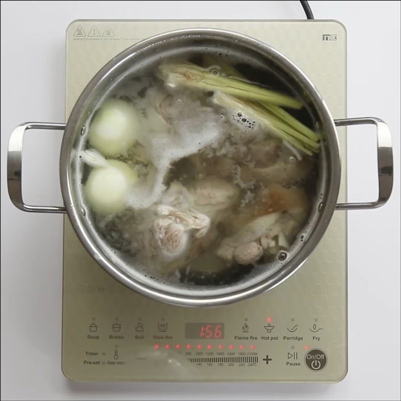
- 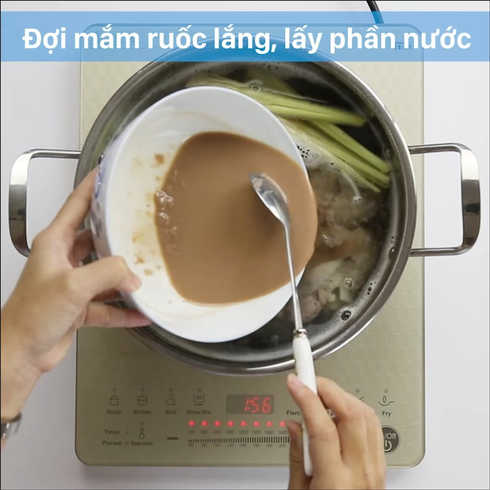

Bạn trụng bún qua nước sôi, để ráo và trút ra tô. Thêm thịt nạm, móng giò, chả cua, huyết, mùi tàu, hành lá thái nhỏ, một chút hành tây thái mỏng rồi chan nước dùng. Bún bò Huế ăn kèm giá đỗ, hoa chuối, húng quế, ớt chưng thì tuyệt ngon bạn nhé

- 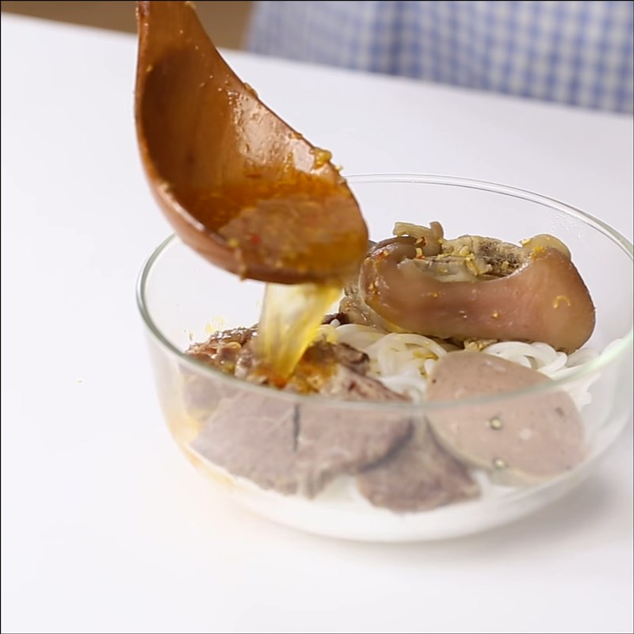

- 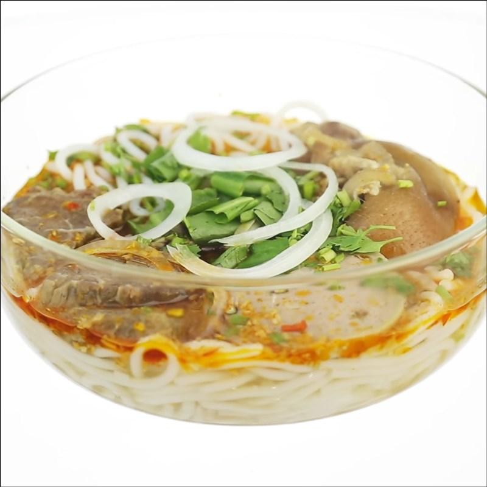

 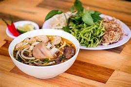
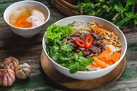
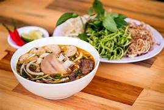
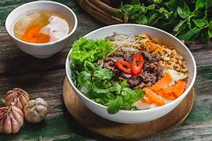